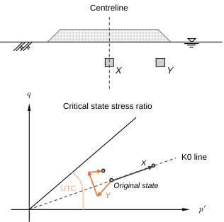
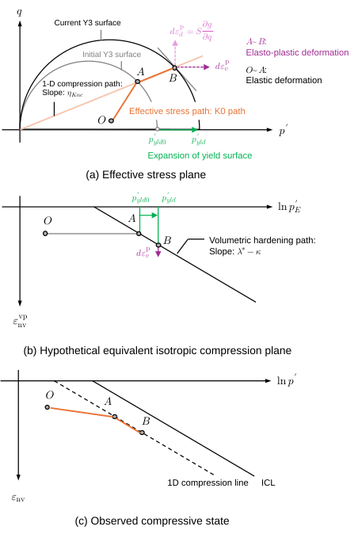
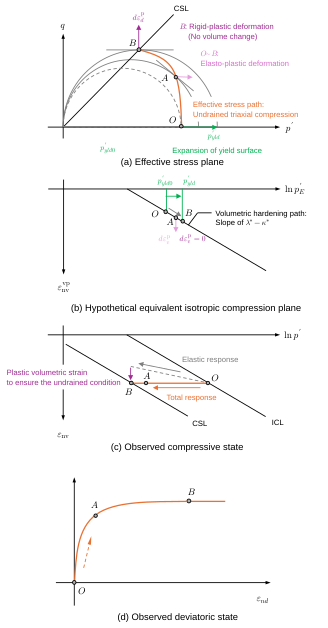

Ch3.2.4
Cam-Clay model
The effective stress paths investigated in conventional laboratory tests (e.g., oedometer consolidation, isotropic consolidation, and undrained triaxial compression) are narrow in scope. The actual effective stress paths experienced by soil elements within the ground are complex and variable, as illustrated in Fig. 3.2.12. These paths are often situated within the pre-failure region. The Modified Cam-Clay (MCC) model, proposed by Roscoe and Schofield (1963), is widely adopted to simulate the variable pre-failure behaviour of soils, combining isotropic elasticity with Y3-type plasticity. The following describes the fundamentals for elasto-plastic modelling in soil mechanics.

Equivalent isotropic stress / Volumetric hardening law
Soils exhibit dilatancy, the coupling between volumetric and deviatoric deformation. To formulate this characteristic, it is convenient to map any effective stress state $(p',q)$ to a single state parameter representing a distinct deformation mechanism (i.e., pure volumetric compression or pure shear deformation). In the present study, it is referred to as the equivalent isotropic stress $p'_E$:
It represents the volumetric hardening, following Eq. (3.2.10) in Chapter 3.2.1.
Yield function / Consistency condition
The yielding is defined by a yield function $f$:
Yielding occurs when $f=0$, while $f<0$ corresponds to the elastic state. The yield condition must remain satisfied during plastic deformation. By combining Eqs. (3.2.23) and (3.2.25), the plastic volumetric strain increment is expressed as:
Plastic potential
While the magnitude of plastic flow is determined via Eq. (3.2.26), its direction is defined by the plastic potential. The derivative of plastic potential with respect to stress components yields the conjugate plastic strain increments (i.e., normality rule):
Here, $\mathrm{d}S$ is the plastic multiplier. In many constitutive models, the plastic potential function coincides with the yield function (i.e., associated flow rule). From comparison of Eqs. (3.2.26) and (3.2.28), the plastic multiplier is determined as:
Note that $\det[\mathbf C^p]=0$, indicating that the plastic compliance matrix is singular. This implies that while plastic strain increments can be determined uniquely from given stress increments, the reverse mapping is not uniquely defined. To reconstruct effective stress increments from known-strain increments, the full elasto-plastic compliance is required:
Here, $[\mathbf C^{ep}]=[\mathbf C^e]+[\mathbf C^p]$, and $[\mathbf C^e]$ denotes the elastic compliance defined in Eq. (3.1.10). Advanced models introduced in the previous section can be regarded as extensions of this formulation through additional hardening parameters and laws.
The MCC model adopts the following expression for the yield function and plastic potential:
The ratio of plastic volumetric to deviatoric strain increments is often referred to as the stress–dilatancy relationship. For the MCC model:
This indicates that only the deviatoric component remains active when $\eta=M$, satisfying the critical state condition. The plastic potential function permits flexibility; for example, the coefficient “2” can be generalised as shown in Muraro and Jommi (2021). Accordingly, the elasto-plastic compliance of the MCC model is:
The constitutive relationship, in theory, defines general responses of soil. For instance, the effective stress path during elasto-plastic deformation under 1-D compression (i.e., $\delta\varepsilon_r=0$) is represented by a single stress ratio $\eta_{Knc}$. The stress ratio is uniquely determined, by solving the equations under lateral constraint condition (Wood 1991), as follows:
Here, $\nu$ is Poisson’s ratio for isotropic elasticity. The model responses during elastic and elasto-plastic loading under 1-D compression are schematically illustrated in Fig. 3.2.13.

The undrained triaxial compression behaviour can also be reproduced by the same relationship. During UTC, the yield surface expands, leading to positive plastic volumetric strain, while a negative elastic volumetric strain is induced by the reduction in mean effective principal stress to satisfy $\delta\varepsilon_v=0$.
Here, $p'_i$ and $\eta_i$ define the initial effective stress state. This indicates, in theory, the effective stress path for conventional UTC exhibits similarity for all initial isotropic stress levels.

The MCC model represents the most fundamental framework for describing the elasto-plastic behaviour of soils, encompassing key characteristics from compressibility to shear response. The model is, however, not perfect. Comparing real soil behaviours with model responses provides a valuable means of deepening the understanding of soil characteristics and generating ideas for improving model formulations. Meanwhile, application to full-scale analyses, including finite element analysis, requires the derivation of a general form of the elasto-plastic stiffness matrix: